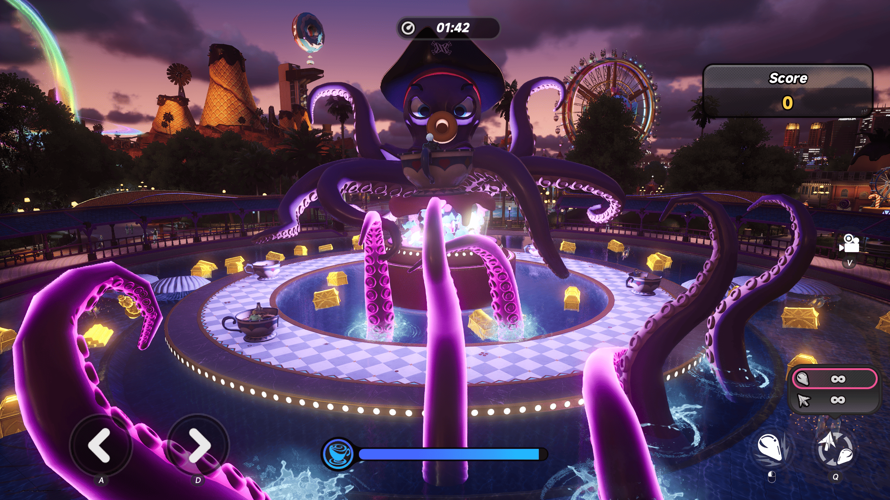
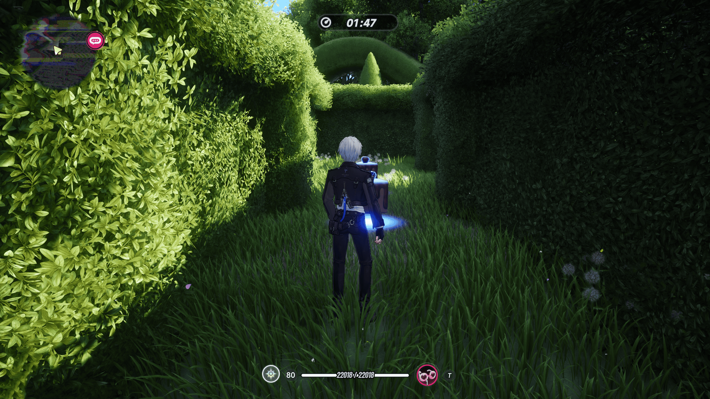
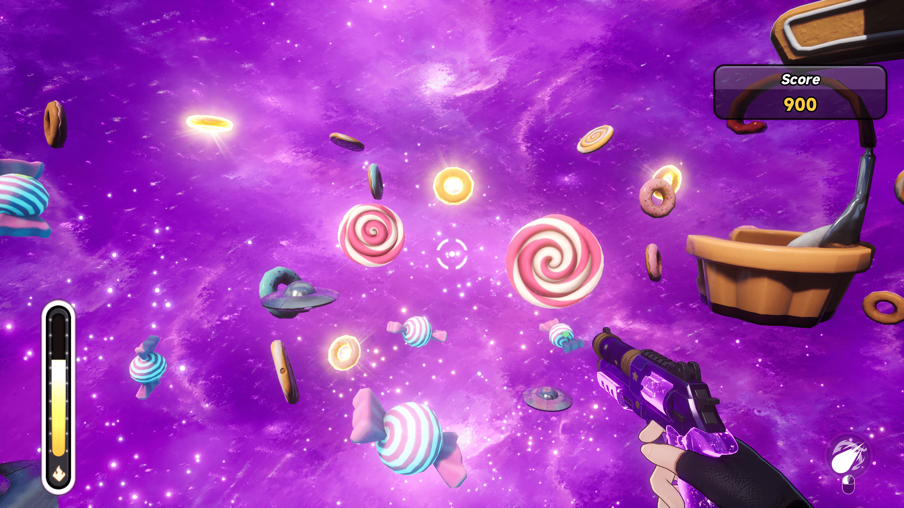
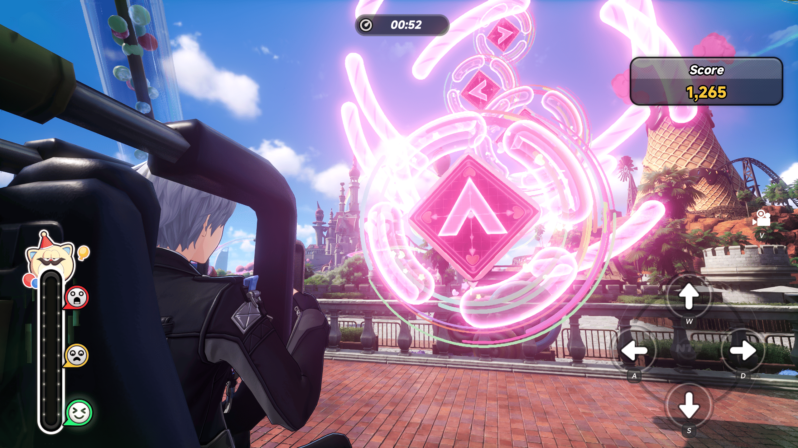
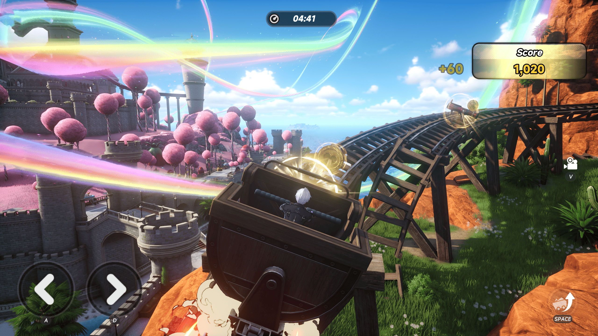

이환 푸카 파라다이스 수첩 안내 따라 놀이기구 이용법, 스타 쿠폰 골드 카드 교환까지 정리
처음 푸카 파라다이스에 들어가는 분 기준으로 정리했습니다. 인벤 방송 정리 기사 기준으로 수첩이 짚어 주는 순서대로 놀이기구를 돌면 되는 구조인데요, 여행기 이벤트 보상은 11월 11일 06:59(KST)까지만 받을 수 있습니다.
보시면 밤하늘 아래 놀이공원 성이 중심에 서 있는 그림이에요.
출처: 이환 공식 Steam 공지
📜 QUEST LOG ┃ 글 한눈에 보기
1. 푸카 파라다이스 → 2. 수첩 안내 순서 → 3. 놀이기구 5종 → 4. 쿠폰·골드 카드·상점 → 5. 기한
1. 이환 푸카 파라다이스, 섬 전체가 놀이공원인 신규 지역
푸카 파라다이스는 1.4 버전 '누구를 위하여 기도를 올리나'(9월 30일 업데이트)와 함께 들어온 신규 지역으로, 인벤과 게임메카 기사에서 섬 하나를 통째로 놀이공원으로 꾸민 초대형 테마파크로 소개합니다. 인벤 기사에서는 구역을 네 곳으로 나눠 소개하는데요.
- 푸카 스트리트: 드롭타워·회전 문어·기념품 상점·포인트 상점
- 케이크 마운틴: 시크릿 플라워 가든·스푸키 쿠키하우스
- 라바 타운: 골드러시·활화산 롤러코스터
- 푸카 드림 캐슬: 매일 밤 열리는 일루전 불꽃 쇼
아래 표는 공식 공지에 적힌 놀이기구 이름 기준입니다.
2. 수첩 안내 따라 도는 순서
인벤 방송 정리 기사 기준으로 수첩은 첫 방문 때 받습니다. 안내를 따라 추천 동선대로 놀이기구를 돌면서 보상까지 챙기세요. 같은 기사에서는 이걸 유람 수첩 '푸카 파라다이스 여행기'로 소개했어요.
공식 이벤트 공지에서는 '기연의 스탬프'를 모아 '기간 한정 기연'을 완료하면 환석·기만의 주사위·유빙 극장 티켓·특급 헌터 가이드·혼돈 염료 같은 한정 보상을 준다고 안내합니다. 돌아다니는 순서는 인벤 이용자 공략 기준으로 이렇게 잡으세요.
- 간단한 미니게임으로 스타 쿠폰부터 확보하세요
- 쿠폰으로 골드 카드를 교환하세요
- 놀이기구를 한 번씩 타면서 여행기 보상을 회수하세요
- 효율 좋은 놀이기구를 반복해서 쿠폰을 모으세요
- 교환 상점에서 원하는 보상으로 바꾸세요
3. 놀이기구 5종 한눈에
공식 Steam 공지에 소개된 놀이기구는 다섯 종류이고, 조작과 조기 종료 조건, 특별 요소는 아래 표대로입니다.
| 놀이기구 | 조작·목표 | 실패(조기 종료) | 특별 요소 |
|---|---|---|---|
| 문어 빙글컵 | 방향키로 시점을 돌리고 사격키를 길게 눌러 발사. 포탄은 촉수를 쳐내 컵을 지키고, 갈고리는 보물상자·보물 지도를 획득 | 컵 내구도가 0이면 낮은 평점으로 종료 | 보물 지도를 다 모으면 챌린지 스테이지, 황금 촉수를 전부 물리치면 스페셜 엔딩 |
| 시크릿 플라워 가든 | 랜덤 지점에서 시작하는 미로. 포커 카드를 모두 모으고 갇힌 푸카몽을 전부 구출 | 시간 안에 탈출 못 하면 낮은 평점으로 종료 | 롤리팝 안경은 출구를 보여주지만 시간이 더 빨리 흐르고, 특별한 덤불에 다가가면 숨은 통로가 열림 |
| 캔디 요정 왈츠 | 초록 커서가 버튼 중앙에 왔을 때 해당 방향 버튼을 눌러 화력 축적(퍼펙트·보통·실패 판정). 타워 꼭대기에서 1인칭으로 공중의 캔디를 쏴 점수 획득 | 공지에 조기 종료 조건 없음(타이밍 판정만) | 축적한 화력의 절반이 퍼펙트면 특별 챌린지 |
| 스위트 휠 | 방향키로 원을 맞혀 점수. 핑크는 한 번, 파랑은 길게, 주황은 연속 입력 | 실수하면 공포 수치가 쌓이고 너무 높아지면 종료 | 완벽 명중을 여러 번 하면 특별 챌린지 |
| 라바 타운 골드러시 | 방향키·점프키로 광차를 몰아 인접 궤도를 오가며 장애물 회피. 총기 아이템으로 장애물 공격·금화 수집 | 감점이 많이 쌓이면 종료 | 점프 중 좌우 입력으로 착지 궤도 변경, 용암이 분출하면 조작 제한, 가파른 궤도는 가속키 |
문어 빙글컵은 컵 내구도가 0이 되면 낮은 평점으로 끝나니, 포탄으로 촉수부터 쳐내서 컵을 지키세요.

문어 빙글컵 화면인데요, 왼쪽 아래 A·D 화살표로 시점을 돌리고 위쪽에서 남은 시간이 흘러갑니다.
출처: 이환 공식 Steam 공지
시크릿 플라워 가든은 시간 안에 탈출하지 못하면 낮은 평점으로 끝나고, 롤리팝 안경은 출구를 보여주는 대신 시간이 더 빨리 흐릅니다.

시크릿 플라워 가든은 이렇게 울타리 숲 사이를 걸어 출구를 찾는 구조예요.
출처: 이환 공식 Steam 공지
캔디 요정 왈츠는 초록 커서가 버튼 중앙에 왔을 때 방향 버튼을 눌러 화력을 쌓고, 타워 꼭대기에서 공중의 캔디를 쏴 점수를 얻습니다.

캔디 요정 왈츠의 사격 파트로, 화면 한가운데 조준점으로 떠다니는 캔디를 맞힙니다.
출처: 이환 공식 Steam 공지
스위트 휠은 핑크는 한 번, 파랑은 길게, 주황은 연속 입력이니 색을 보고 입력을 나누세요. 실수가 쌓이면 공포 수치가 올라갑니다.

스위트 휠은 가운데 분홍 타일의 방향 표시에 맞춰 오른쪽 아래 W·A·S·D 키를 누르는 화면이에요.
출처: 이환 공식 Steam 공지
라바 타운 골드러시는 감점이 많이 쌓이면 끝나고 용암이 분출하면 조작이 제한되니, 장애물 회피부터 챙기세요.

라바 타운 골드러시는 광차를 타고 궤도를 따라가며 금화를 줍는 화면입니다.
출처: 이환 공식 Steam 공지
참고로 이용자 공략 기준으로는 푸카콩 무너뜨리기·인형 대작전·럭키 다트 같은 다른 이름의 미니게임에도 기연의 스탬프가 걸려 있고, 클리어만 해서는 안 되고 미니게임별 조건을 채워야 합니다.
4. 스타 쿠폰, 골드 카드, 교환 상점 순서
인벤 기사 기준으로 놀이기구에서 모은 푸카 스타 쿠폰은 푸카 교환 상점에서 쓰고, 이용자 공략 기준으로 골드 카드를 쿠폰으로 먼저 바꿔 두면 이용 요금이 영구적으로 90% 깎입니다.
- 파라다이스 골드 카드: 교환 상점에서 쿠폰으로 교환, 소지하는 동안 이용 요금 영구 90% 할인
- 교환 보상: 인벤 기사 기준 탈것 '파라다이스 크루즈', 글라이더 '초콜릿 비행기', 푸카 테마 프로필 테두리·칭호·명함, 환석, 육성 재료
- 액세서리 '천재적 발상': 스타 쿠폰 상점에서 교환
쿠폰 파밍은 이용자 공략 기준으로 시크릿 플라워 가든이 추천됩니다. 미로 루트를 익혀 클리어를 빠르게 하면 S랭크 보상도 많이 나온다고 하니 루트부터 손에 익히세요. 이용 요금과 쿠폰 단가는 공지에서 수치를 찾지 못했으니 숫자는 인게임에서 확인하세요.
5. 이벤트 기한과 헷갈리기 쉬운 보상
'푸카 파라다이스 여행기' 기간 한정 이벤트는 9월 30일 버전 업데이트 후부터 11월 11일 06:59(KST)까지입니다. 그 뒤에는 기간 한정 보상을 받을 수 없으니 미뤄 두지 마세요.
하나 더, 1.4 접속 선물로 나오는 아카네 코스튬 '바텐더 스페셜'과 200만 폰즈는 10월 21일 점검 후 지급이고, 이건 푸카 파라다이스 자체 보상이 아니라 버전 선물입니다. 둘을 섞어서 계산하면 헷갈려요.
자주 묻는 질문
Q. 푸카 파라다이스에는 어떻게 들어가나요?
공식 1.4 공지에는 이 지역의 별도 진입 조건이나 권장 레벨 표기가 없었습니다. 지도상 위치도 확정된 자료를 못 찾았으니 인게임에서 직접 확인하시는 게 맞아요.
참고한 곳
· 이환 공식 사이트 1.4 업데이트 공지
· 이환 공식 Steam '푸카 파라다이스 여행기' 이벤트 공지
· 인벤 푸카 파라다이스 소개 기사
· 게임메카 푸카 파라다이스 소개 기사
· 인벤 이용자 공략 푸카 간단 공략
· 인벤 이용자 공략 기연의 스탬프
▶ 같이 보면 좋은 글
· 이환 소소한 꿈 근심 없는 베개 공략
· 이환 갈림길 순회 막차의 밤 공략
· 이환 레이븐 세팅 공략 아크, 카트리지 드라이브 모듈, 돌파, 파티 조합